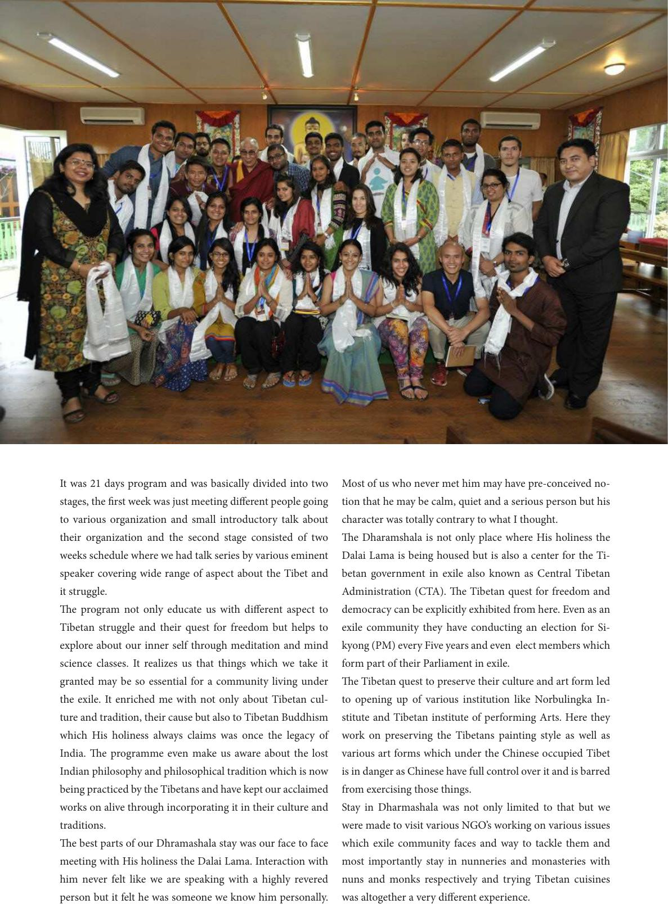

It was 21 days program and was basically divided into two
stages, the rst week was just meeting dierent people going
to various organization and small introductory talk about
their organization and the second stage consisted of two
weeks schedule where we had talk series by various eminent
speaker covering wide range of aspect about the Tibet and
it struggle.
e program not only educate us with dierent aspect to
Tibetan struggle and their quest for freedom but helps to
explore about our inner self through meditation and mind
science classes. It realizes us that things which we take it
granted may be so essential for a community living under
the exile. It enriched me with not only about Tibetan cul-
ture and tradition, their cause but also to Tibetan Buddhism
which His holiness always claims was once the legacy of
India. e programme even make us aware about the lost
Indian philosophy and philosophical tradition which is now
being practiced by the Tibetans and have kept our acclaimed
works on alive through incorporating it in their culture and
traditions.
e best parts of our Dhramashala stay was our face to face
meeting with His holiness the Dalai Lama. Interaction with
him never felt like we are speaking with a highly revered
person but it felt he was someone we know him personally.
Most of us who never met him may have pre-conceived no-
tion that he may be calm, quiet and a serious person but his
character was totally contrary to what I thought.
e Dharamshala is not only place where His holiness the
Dalai Lama is being housed but is also a center for the Ti-
betan government in exile also known as Central Tibetan
Administration (CTA). e Tibetan quest for freedom and
democracy can be explicitly exhibited from here. Even as an
exile community they have conducting an election for Si-
kyong (PM) every Five years and even elect members which
form part of their Parliament in exile.
e Tibetan quest to preserve their culture and art form led
to opening up of various institution like Norbulingka In-
stitute and Tibetan institute of performing Arts. Here they
work on preserving the Tibetans painting style as well as
various art forms which under the Chinese occupied Tibet
is in danger as Chinese have full control over it and is barred
from exercising those things.
Stay in Dharmashala was not only limited to that but we
were made to visit various NGO’s working on various issues
which exile community faces and way to tackle them and
most importantly stay in nunneries and monasteries with
nuns and monks respectively and trying Tibetan cuisines
was altogether a very dierent experience.